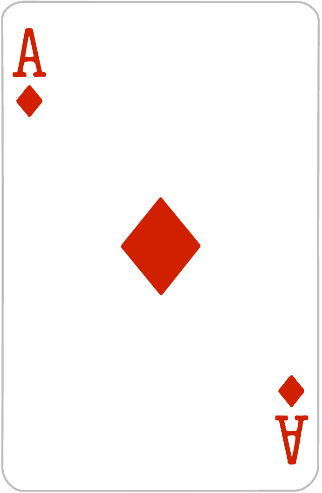

| Ejercicio | Descripción | Recurso si lo hubiera |
|---|---|---|
| Actividad 1 BlackJack | Realizar una web con JS que simule el funcionamiento de un blackjack. Para ello, la página tendrá el siguiente comportamiento: 1. Nada más arrancar pedirá mediante un prompt el nombre del jugador 2. Una vez introducido empezará a jugar la banca, sacando cada una de las cartas de su mano. Además de mostrar la carta obtenida, se mostrará un contador con los puntos que lleva la banca 3. Cuando la banca deje de jugar empezará el usuario pudiendo mediante 2 botones las siguientes acciones a. Pedir carta: sacará una carta a la mano del jugador y le sumará un punto b. Plantarse: Terminará el juego y se decidirá el ganador Las cosas que hay que tener en cuenta en el juego son las siguientes: - La banca pide cartas de forma automática hasta que tenga un mínimo de 17 puntos. En este caso pasará el turno al jugador automáticamente - En el caso de que la banca o el jugador obtenga una puntuación de 22 o superior, habrá perdido automáticamente - Si ambos jugadores obtienen una puntuación de 21 el juego acaba en empate - Ganará el jugador que más se acerque a 21 - Los puntos de las cartas son los siguientes o AS: Valor de 1 (se obvia el doble valor de la carta) o 2-10: Valor numérico o J, Q, K: Valor de 11 Se valorará el uso de métodos y objetos |
 |
| Actividad1 Trimestre 2 | Todavia no iniciada | |
| Actividad1 Trimestre 3 | Todavia no iniciada |
| Ejercicio | Descripción |
|---|---|
| EjercicioPiramide | Piramide: Escriba un script que pedido por consola (prompt un número), represente por consola la siguiente figura con el número de filas introducido en el prompt. En el caso de no introducir un número o que sea menor que 0 saltará un aviso por consola y dará la posibilidad de repetir el proceso: |
| FizzBuzzJS | 1. Escribe un programa que use console.log para imprimir todos los números de 1 a 100, con dos excepciones: - Para números divisibles por 3, imprime "Fizz" en lugar del número - Para los números divisibles por 5 (y no 3), imprime "Buzz" en su lugar. Cuando tengas eso funcionando, modifica tu programa para imprimir " FizzBuzz", para números que sean divisibles entre 3 y 5 (y aún imprimir "Fizz" o "Buzz" para números divisibles por solo uno de ellos).: |
| Tablero Ajedrez | Escribe un programa que cree un string que represente un tabledo de 8 × 8, usando caracteres de nueva línea para separar las líneas. En cada posición del tabledo hay un espacio o un carácter "#". Los caracteres deberían de formar un tablero de ajedrez. |
| Fecha cumpleaños | Comparación de fechas:Realiza un programa que pida por prompt el día, mes y año de tu cumpleaños. Indica cuantos días han pasado desde tu cumpleaños hasta el día de hoy |
| Operaciones | Pedir dos números por teclado y mostrar en una alerta todos las operaciones posibles para dichos números (suma, resta, multiplicación y división). Adicionalmente el programa hará lo siguiente: - si se introduce números menores que 0 o letras que salte una alerta indicando el error y el programa parará - tras mostrar todas las operaciones se pedirá confirmación al usuario para que indique si quiere continuar realizando operaciones: en caso positivo el programa volverá a empezar. En caso negativo el programa parará - si se detecta que alguna de las operaciones es negativa el programa parará tras realizar todas las operaciones de los números |
| Frases | Pedir al usuario que introduzca una frase por teclado. Tras meter la frase se ejecutará la siguiente funcionalidad: - Si la frase tiene menos de 10 letras, se volverá a pedir nuevamente - Si tiene más de 10 letras aparecerá una alerta con la siguiente información: - El dato introducido tiene: - X letras - X palabras - X frases |
| Operaciones Recurrentes | Pedir al usuario que introduzca por teclado dos números y mediante funciones mostrar el resultado de todas las operaciones en un cuadro de alerta |
| Ejercicio Local Storage | Realizar una aplicación web al igual que la imagen que se adjunta. El funcionamiento será el siguiente:
- Al agregar elementos dentro de cada columna tendrá que guardar en el almacenamiento indicado con el par clave - valor que se ponga en el formulario - En el caso de agregar un objeto se guardará en formato json - A la hora de borrar se tendrá que seleccionar una clave, la cual se deberá borrar del almacenamiento correspondiente. Nada más arrancar la aplicación deberá mostrar en la parte inferior las claves que tiene guardadas |